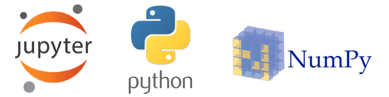

2. Jupyter and Computer Programming#
Throughout this course, we will use Jupyter notebooks to explore the material. Assignments will provide you with basic background in Jupyter, Python, and Numpy. (I had been hoping to use Julia, which is arguably easier, but at present Python is more popular and better-supported.)
2.1. 🥅 Learning Objectives#
Fundamental programming concepts
Computer programming technical jargon (interpreter, syntax, semantics, execution, etc.)
Basics of Python programming language and its benefits
How to use Jupyter
How to use Numpy
2.2. Overview of Programming#
In this course, we will primarily use the Python programming language. The best way to learn a programming language is to practice it on your own and learn through trial and error. Making mistakes helps you improve, so if at any point you get stuck, don’t get discouraged, seek help, and keep coding! There are many great resources online for learning about programming, so the course content for this topic is mostly based on external sources, especially LinkedIn Learning.
2.3. What is Programming?#
Programming is the process of writing a set of instructions (like a step-by-step recipe) that tells a computer how to perform a certain task. This recipe is written in a code called programming language. Similar to human languages, programming languages have syntax (the rule for writing instructions) and semantics (the meaning of the instructions). Also like human languages, there are lots of programming languages to choose from, each of these languages has its own history, features, and applications, but they all share the same fundamental ideas. Learn more about programming languages by watching this 3-minute YouTube video here.
The most popular programming languages are either interpreted or compiled. For example, Python is an interpreted language. The Python interpreter reads a set of code instructions written in Python and translates it into a set of instructions for the computer to follow, and these instructions are then executed. This is analogous to the way a human language interpreter translates the spoken word from one language to another, on the fly. In compiled languages like C++ or Fortran, an entire computer program (or a large section thereof) is translated into instructions for the computer to follow, which is subsequently executed. This is analogous to the way a human translator might translate a book: the book is translated one chapter at a time, and perhaps content is rearranged to make it more idiomatic for the new language; then the book is read. Some other languages (e.g., Julia) are just-in-time translated, which is like translating a book chapter only after you are sure someone will read it, and potentially catering your translation to the particular person reading the book. Obviously compiled languages can be more efficient computationally, but they are also more complicated to use because the modules of the computer program must be translated from the human-readable computer language to machine-readable instructions (“compiled”), then combined together (“linked”), before they are finally executed. In this course we will use mainly Python, which is an interpreted language.
Computers always do exactly what they are told to do, so when you write a program, it is important to be clear, precise, and explicit about what you want the computer to do. It is therefore extremely important to learn the syntax and semantics of the language you use.
2.4. Why Learn to Program?#
While computers always do exactly what you tell them to do, so in some sense they cannot do anything you could not do yourself. However, they allow you to perform those actions more efficiently. As Steve Jobs said, a computer is a bicycle for the mind. And thus learning to program a computer is like learning to ride a bicycle.
2.5. Why Learn Python?#
There are many programming languages out there, and each language has its unique advantages and disadvantages. Once you learn the basics of programming in one language, you can generally apply the same concepts to other languages. Python is one of the fastest-growing programming languages (Dropbox, Instagram, Netflix, and Google use Python extensively) and it is increasing popular in chemistry too. For more about the advantages of Python, watch the 2-minute video segment.
Compared to most other languages, Python is easier to read and write. Its syntax is relatively simple, yet its flexibility—its ability to perform tasks from web development to scientific computing—is nearly unsurpassed. Importantly, there are a large number of plug-and-play Python libraries, which allow one to extend the basic features of the Python language with additional features. We will, for example, find the Numpy and Scipy libraries especially helpful.
2.6. What is Jupyter?#
To write and execute your code, you need to have access to the appropriate intepreters/compilers either through a web brower or locally on your computer. In this course, we will be using Jupyter notebooks. Jupyter notebooks provides an interactive computing environment, originally focussed on Julia, Python, and R, though other languages are supported now. Because Jupyter Notebooks run interactively inside a browser, they are user-friendly. Nonetheless, the underlying computations may be run on very powerful computers.
2.6.1. Getting Started with Jupyter#
In order to interact with the material in this course and complete the assignments/assessments, you will need to view, execute, create, test, and share Jupyter notebooks. Jupyter notebooks can be read, edited, and saved using either online (cloud) resources, local computing (e.g., your laptop), or external servers. We will predominately use cloud resources in this class. In all cases, there is a computer that presents the Jupyter Notebook user interface to the user, and then executes the notebook ad directed using an underlying computational engine (called a kernel) and its dependencies. When the computer supports multiple users and their Jupyter notebooks it is called a JupyterHub. However, it is not only possible, but common, to run Jupyter on your own laptop or desktop computer. The disadvantage of these more “locally” hosted Jupyter notebooks is that it can be difficult to support the wide panoply of extensions that Jupyter can use. Large cloud-based Jupyter platforms tend to be more robust and therefore easier for beginners, since they’ve been tried and tested with millions of notebooks. The main disadvantage of these platforms is that they can be (but need not be) slow.
2.6.1.1. Jupyter in the Cloud#
There are several ways to edit and execute a Jupyter notebook (an .ipynb file) in the cloud.
Using Google Colab. Recommended! Learn more about Google Colab by watching this video and reading this page.
GitHub Codespaces is an online version of the Visual Studio Code editor. It is free for people with GitHub education accounts.
Using Binder. I find Binder more useful for running Notebooks than creating them from scratch.
There are many other cloud-based Jupyter notebook platforms. With smaller platforms, however, it can be difficult to ensure that the dependencies you need are installed.
We will endeavor to ensure that assignments work with Google colab. We’ll try to help people using other platforms too, but make no promises.
2.6.1.2. Local Installation of Jupyter (optional)#
If you would like to use Python and Jupyter locally, the easiest way to do this is probably by using the Anaconda distribution of Python, which simplifies many of the challenges a new programmer will encounter. For example, Anaconda’s package manager allows you to easily install different versions of Python and third-party Python packages for various operating systems, including:
You can then open the Anaconda Navigator and launch a Jupyter Notebook.
Visual Studio Code also supports Jupyter Notebooks, and perhaps interfaces a little bit more nicely with GitHub. (They are both Microsoft products.)
2.6.1.3. Syzygy (deprecated)#
Syzygy is a JupyterHub that is provided free to most Canadian university students. You can use it by:
Log into syzygy.ca. This is a JupyterHub. If you don’t have a Canadian university account, you can also log in
Read the tutorial, especially the documentation on opening and using a Python 3 notebook. Opening a new empty notebook is as simple as clicking “New – Notebook – Python 3”.
The problem with syzygy is that it can be challenging to support nonstandard dependencies (external libraries that your notebook depends on).
2.7. What is Numpy?#
Numpy is a Python library that provides methods for manipulating vectors and matrices in Python. For example, Numpy can be used to determine the eigenvalues and eigenvectors of a matrix, or to solve a system of linear equations. Numpy undergirds many of the most useful scientific software packages, and provides most of the key mathematical tools that are needed in this course.
2.8. LinkedIn Learning Courses#
To learn more about Jupyter, programming concepts, Python programming, and Numpy, you’ll complete several LinkedIn Learning courses. Upon completing each course, download your certificate of completion and upload it as your assignment. You can also add the certificate to your LinkedIn profile.
Before you get started, it’s helpful to log into LinkedIn Learning. (However, the links provided should automatically prompt you to log in if you are not already.) If you already have a LinkedIn account associated with a different e-mail, you can link your accounts.
2.9. 👩🏽💻 Assignments#
You will learn more about Jupyter, Python, Numpy, and GitHub through the assignment.
As a first (very basic) application to quantum mechanics, you’ll normalize the wavefunction. (This assignment is also basically a tutorial.)
A more advanced exercise including Numpy operations is to compute student grades using a complicated grading scheme. Github Classroom Link.
A curated list of additional training materials is provided below. Here is a selected subset that I recommend for those wishing to earn extra credit.
2.10. 🪞 Self-Reflection#
What is the difference between interpreted and compiled languages? What type of language is Python? Can you explain why we need two different types of languages?
Have you done assignments and other tasks in the past that would have been easier using Jupyter/Python/Numpy?
Sometimes it is helpful to write a Python function; other times it is better to just use a Jupyter notebook as a calculator. How do you tell the difference?
2.11. 🤔 Thought-Provoking Questions#
What’s the relationship of a class and the instance of a class?
Why do we need classes?
Why do we need functions? What is a recursive function?
What cell formats are supported in a Jupyter Notebook? What are magic commands and why are they useful?
2.12. 📚 Additional Learning Resources#
There are many free and paid resources available for deepening your knowledge of Python including videos, tutorials, courses, and books. The following are recommended. For tutorial-based courses, if you can somehow document your completion of the tutorial, then you can submit the proof of your completion for extra credit.
Learn Python – Full Course for Beginners. This is indexed so you can skip to the topic you would like to learn about. video.
The Coder’s Apprentice. This includes lots of online exercises!
Python Tutorial - Python for Beginners video.
Learn Python interactive tutorials.
The Python Tutorial tutorial.
Python Tutorial from W3School tutorial.
Introducing Python to Chemistry Students: web site.
Python for Engineers and Scientists (intermediate level)
Runestone academy (notes with interactive tools) interactive web site. There are other interesting courses too
Introduction to Julia (assumes prior programming knowledge). interactive video tutorials.
List of Julia tutorials web based.
Think Julia free online book.
Intro to Julia video.
Numpy tutorial web site.
Hat-tip: Farnaz Heidar-Zadeh at Queen’s University, who curated much of this material.